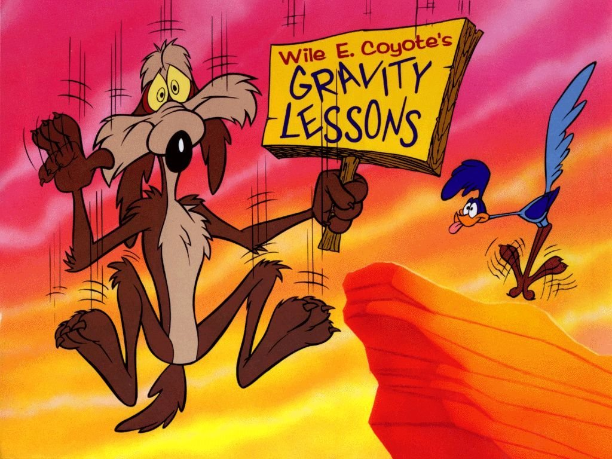
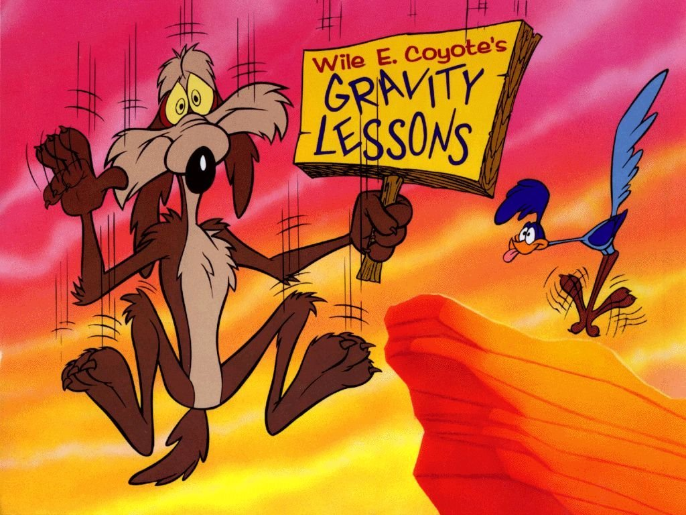
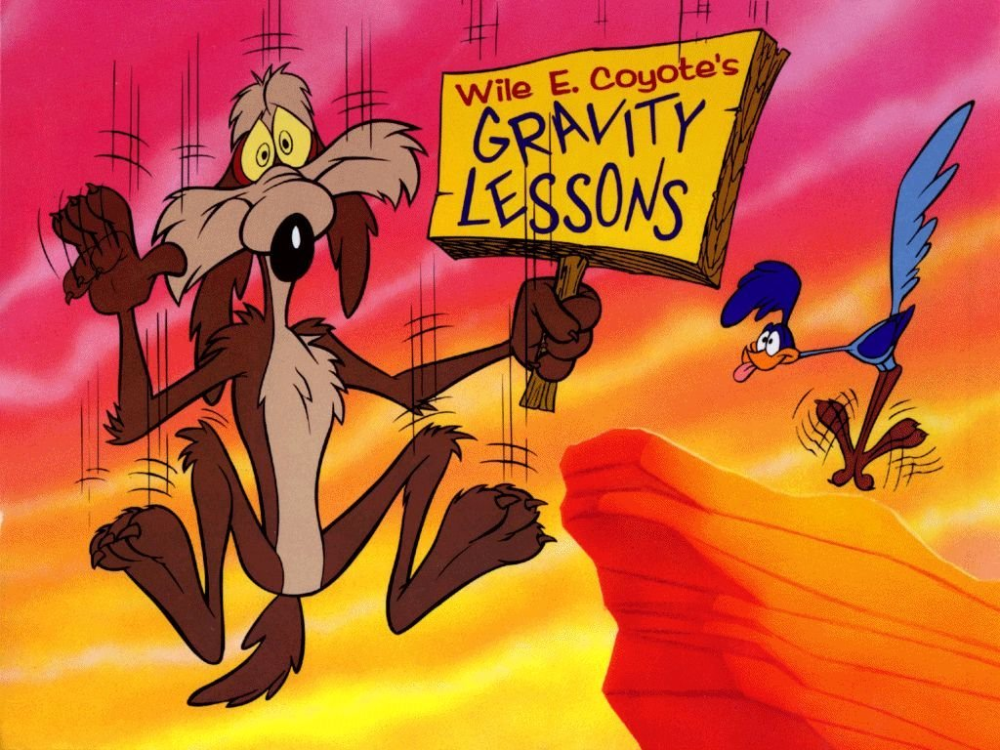

O formato de imagem JPEG, também chamado de JPG, é o formato de imagem considerado padrão e o mais utilizados no ambiente digital. Além disso, o JPG possui uma taxa de compressão bastante alta, podendo fazer com que uma imagem de resolução Full HD (1920×1080 pixels) ocupe muito pouco espaço no disco rígido – cerca de 100 Kb. Contudo, isso só acontece devido à perda da qualidade. Veja mais...
É um formato de imagem de bitmap que foi desenvolvido por uma equipe do provedor de serviços on-line CompuServe, liderado pelo cientista de computação americano Steve Wilhite em 15 de junho de 1987. Desde então, tem vindo a ser amplamente utilizado na World Wide Web devido ao seu amplo suporte e portabilidade entre muitas aplicações e sistemas operacionais. Veja mais...


PNG (Portable Network Graphics) é um formato de dados utilizado para imagens, que surgiu em 1996 como substituto para o formato GIF, devido ao facto de este último incluir algoritmos patenteados. Esse formato livre é recomendado pela W3C, suporta canal alfa, tem uma maior gama de profundidade de cores, alta compressão (regulável), além de outras características. Veja mais...
SVG é a abreviatura de Scalable Vector Graphics que pode ser traduzido do inglês como gráficos vetoriais escalonáveis. Trata-se de uma linguagem XML para descrever de forma vetorial desenhos e gráficos bidimensionais, quer de forma estática, quer dinâmica ou animada.